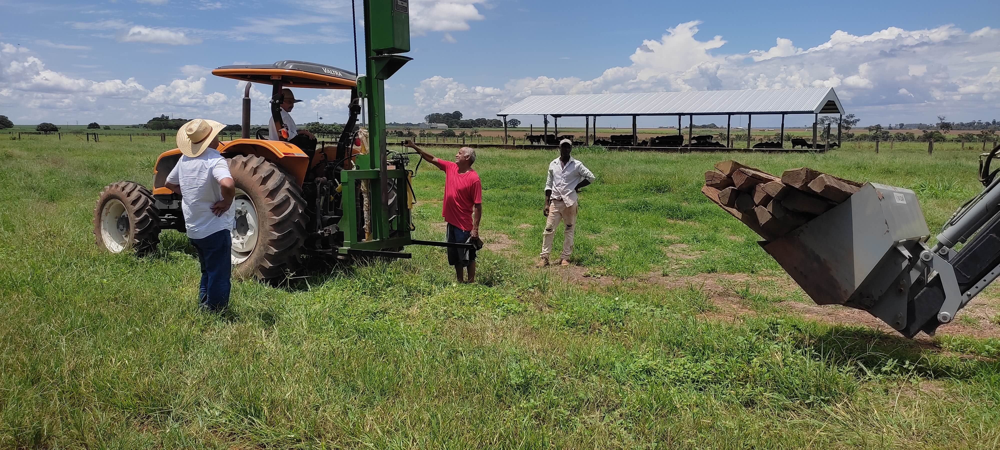

15 de Junho, 2024
Como Escolher o Implemento Ideal para Sua Propriedade
Guia completo para auxiliar na escolha dos melhores implementos agrícolas conforme o tipo de cultura e tamanho da propriedade.
Leia Mais →Há mais de uma década oferecendo qualidade, confiança e excelência no atendimento para o setor agrícola em Santa Tereza de Goiás e região.
Solicite um OrçamentoA CPFM Implementos & Serviços é uma empresa familiar fundada por Carlino Pinto Filho, com o compromisso de oferecer soluções completas e personalizadas para o setor agrícola.
Nossa missão é proporcionar aos nossos clientes implementos agrícolas de alta qualidade, serviços especializados e suporte técnico diferenciado, contribuindo para o aumento da produtividade e eficiência no campo.
Com sede em Santa Tereza de Goiás, atendemos toda a região com dedicação, profissionalismo e comprometimento com a excelência. Nossos valores são baseados na confiança, transparência e satisfação do cliente.
Venda e locação de implementos de alta qualidade para todas as necessidades.
Serviços especializados de manutenção preventiva e corretiva para seus equipamentos.
Orientação especializada para a escolha e otimização dos seus equipamentos.
Estruturas metálicas robustas para armazenamento e proteção do seu patrimônio.
Guia completo para auxiliar na escolha dos melhores implementos agrícolas conforme o tipo de cultura e tamanho da propriedade.
Leia Mais →Dicas essenciais de manutenção preventiva que podem economizar milhares de reais e evitar paradas não programadas.
Leia Mais →Conheça as principais inovações tecnológicas que estão revolucionando o setor agrícola e como aplicá-las.
Leia Mais →